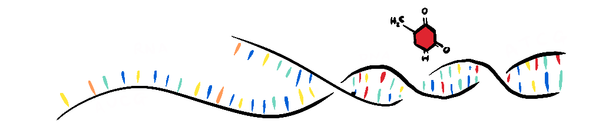

A CASE FOR CONSCIOUS SIGNIFICANCE
a new approach to free will & determinism
The following is born out of a frustration with the free will, determinism and compatibilism debate and its terminology—finding my intuitions do not seem to align with a particular camp. This is an attempt to explain my philosophical position in a way that provides a basis to reconcile that which is subjectively important (to me at least) within a possibly deterministic universe.
CONSCIOUS SIGNIFICANCE
My position is determinism-agnostic; it holds for either determinism, a mixture of determinism and indeterminism, or free will. The way I see it is that what I want, or what I feel I have in terms of autonomy, is not 'free will' but rather conscious significance—my conscious experience is relevant to outcomes.
So, I begin from the position that basically everything is set about me by forces outside of my control—I don't get any choice over: my desires, my brain's model of the world, my brain's model of myself, or even my intentions. My default mode in the world is to have intentions arise, and when there is an obvious way to act to achieve that goal I act accordingly, and then my conscious mind experiences the results, which (subconsciously) informs my automatic processes, my model of the world, and my model of myself.
But, when I have an intention where there is not a clear outcome, I can make a decision.
MAKING DECISIONS
What a decision involves is running through numerous simulations until I find one that is satisfactory, and then I can act on it. The conscious brain does the same thing it always does, experiences the result of action (in this case the predicted result of the simulation), which informs my model of the world and myself, and this loops until I have a satisfactory option to act on. This, as I see it, is the role of my conscious brain and comprises my (personal) sense of autonomy.

Although consciousness, in both its experience of the world and its experience of internal simulations, happens after the fact, it is a necessary factor in the iterative internal process when determining a satisfactory action, and this is what we experience as deliberate decision-making. This supports the only important aspect (to me at least) of what people call 'free will,' our sense of autonomy and what I would prefer to call 'conscious significance'. This is what I'm concerned about—the centrality of consciousness in deliberate decision-making.
THE VALUE OF EFFORT
The logic of the model above underpins why we bother to make conscious effort rather than taking a determinist position that might lead one to abandon such effort.
Effort can be put towards deciding on a course of action or deriving an answer to a maths question, or formulating a sentence in an essay—basically, testing strategies quickly, iteratively, in my mind, based on my experience, but also based on some trial and error, so you're following a process analogous to evolution.

AN ANALOGY TO EVOLUTION
I would say that our sense of 'self' and our sense of 'free will' is analogous to what we categorise as 'life' from the perspective of evolution.
Some determinists will argue that deterministic forces + randomness is not sufficient to generate something that is categorically different, and yet we see life as categorically different from non-life. Life is an emergent property of a mixture of random and deterministic forces. I see sense of self and free will as categorically different from the other physical properties, inasmuch as life is categorically different from non-life. I would argue that even hard determinists live in a way that appreciates this categorical difference.

I agree that it is possible that physics is entirely deterministic (with only apparent randomness) so, when we speak about evolutionary mutations, these may only be a result of apparent randomness, when they actually adhere to an underlying deterministic consistency. And yet, evolution still occurs, based on that (only apparent) randomness.
So, if we concede that determinisic forces + randomness can give rise to emergent phenomena (like life), we can also concede that randomness can be a factor in evolutionary processes even without true randomness. I would posit that the self and free-will can be similarly emergent, based on real or apparent randomness.
ADDRESSING SUBJECTIVE AND PHYSICAL REALITY INDEPENDENTLY
Here's where I'd like to make a distinction between subjective and physical reality. I keep mentioning "the self and free-will" in the same breath, and that's for a reason. This is because I think there is a confusion when we speak about 'free will' being an "illusion". This can be formulated as "You are not really in control of your behaviour" or "The sense that you determine your own actions is an illusion". But do you see the trick here? The position refers to both 'you' and your sense of 'free will', requiring us to accept an intuitive sense of 'self' while denying an intuitive sense of 'free-will'.
PHYSICAL REALITY
If we assume deterministic reductionism, and are looking at life purely in physical terms to determine that our sense of autonomy is an illusion (because it is merely a result of deterministic forces), then we can't, at the same time, accept another illusion (our sense of self) as part of our position. The 'self', when examined physically, is a fiction; it is an arbitrary categorisation based on human intuitions. In reality the 'self', in a deterministic universe, is merely the continuation of deterministic forces—a node that collects genetics and experiences, and, through that node's internal deterministic processes, determines the actions it takes. So, if we replace "self" in the assertion that free will is an illusion, the statement becomes false.
"You are not really in control of your behaviour."
... becomes...
"The continuation of deterministic forces via genetics and experience is not really in control of the result of those deterministic forces."
... and...
"The sense that you determine your own actions is an illusion."
... becomes...
"The sense that the continuation of deterministic forces via genetics and experience determines the result of those deterministic forces is an illusion."
So, when we accept emergent phenomena as real and take both our "sense of self" and our "sense of autonomy" as real things, the sentence "we do not really control our behaviour" is obviously false. But the same is true if we take both our "sense of self" and our "sense of autonomy" as merely reducible to physical forces; the sentence "a series of deterministic forces is not in control of a series of deterministic forces" is also false.

Now, I'll admit this is not very satisfying, in terms of understanding how our intuitions relate to physical reality, but it does square away the (seemingly clever because it feels so counter-intuitive) "gotcha" that various aspects of our experience are "illusions". So, I'll return to the subjective issues (that we actually care about) regarding our feelings of autonomy.
SUBJECTIVE REALITY
I'd like to re-confirm that my use of the term 'free will' in the previous section was not meant to be a pivot towards supporting that term. I still think, the 'free' is at odds with a determinist worldview, and as my position is determinism-agnostic it cannot contradict determinism. But our autonomy and sense that our conscious effort is significant is not necessarily at odds with determinism. At this point I'd like to further distinguish this position from 'free will'.
MY PRIORS (PERHAPS A BIT LATE)
I've always been philosophically secular, so have always believed we are a product of our genes, environment, parenting, education system etc, so I've never conceived of an outside influence on this (from a soul—corrupt or angelic or some other magical ingredient) so perhaps I find it hard to see 'free will' as it is understood as a religious tenet, and consequently as it is construed by its opponents.

FREE WILL AS STRAW-MAN
When I have, in the past, thought about 'free will', I've thought of it in terms of my own autonomy, and specifically in terms of the significance of my conscious effort in my decision-making process. At times the determinist position has seemed to me, to be making a straw-man of 'free will' by stating that we do not choose our motivations, which as I've mentioned I've never assumed we do. It is because of this characterisation of 'free will' and the problematic nature of calling it 'free' I prefer to use the term 'conscious significance'—which, hopefully, avoids falling victim to these assumptions and contradictions.
AN ANALOGY BETWEEN COMPATIBILISM AND SECULAR CHRISTIANITY
It's possible to interpret some compatibilist positions as analogous to the secular Christian position, where one doesn't believe in God but follows Christian moral principles. As someone who hasn't believed in God, I don't have this same cognitive dissonance—my morality has never been connected to belief in God, it's been based on how my actions affect others (broadly Utilitarian). Similarly, because I've always seen people as a product of their genes and environment, I've never thought that they had some magical element that imbued them with free will. So, my sense of 'conscious significance', would be analogous to a secular sense of morality (in relation to the compatibilist / secular Christian analogy).
And so, I'm not a determinist who thinks we should act as if we have free will. I'm claiming that I believe our consciousness is significant in determining the future (whether that future is entirely determined or not) who thinks we should act accordingly—as if our conscious effort is significant to our outcomes. This belief has come from the experience of putting effort into decisions, or not, and seeing the unsatisfactory results of lazy decision-making.
WHAT DOES THIS MAKE ME?
I find my position doesn't align exactly with any particular formulations I've read of determinism, compatibilism or free will, and I have disagreements with key proponents of all these positions. At heart, I'm often looking for common ground and am particularly against throwing out the baby with the bathwater when it comes to lessons that have been learned, or perhaps engrained over centuries, but I also don't want to live believing things because I'd like them to be true, or because they make me more comfortable / less confused. So, despite these potential biases, I do think this philosophical model is internally consistent.

Thanks for reading, there is a lot more I could say about what this model suggests for how we should act in the world, how systems could change and what implications this has for personal responsibility, but first I'd like to introduce a short idea about...